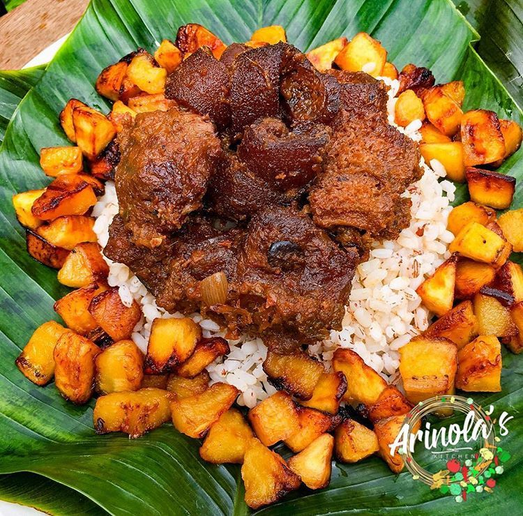
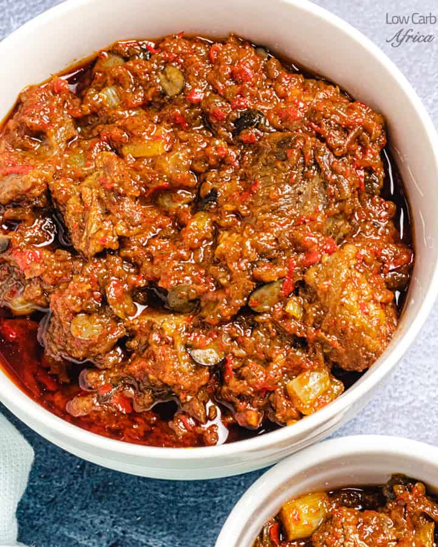
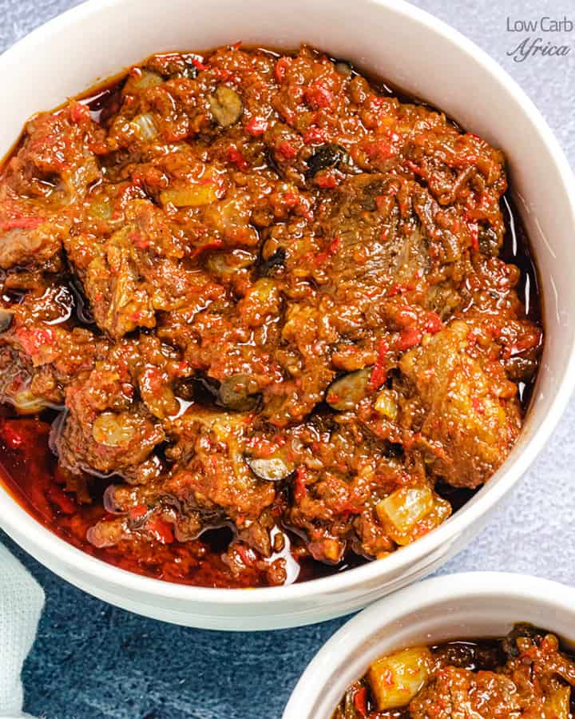

About.
Ofada stew originates from Western Nigeria and is commonly eaten with a locally grown rice called ofada rice. The story of Ofada rice and stew is one that somewhat inspires me.
Recipe.
| Ingredients | Measurements |
| Large bell Peppers | 7 |
| Scotch bonnet peppers | 3 |
| Large red Onions | 4 |
| Braised goat meat (braised with 1 red onion, 1 scotch bonnet pepper, 1 tsp salt and 1 tsp bouillon) | 2 lbs |
| Cleaned smoked dried fish (about 0.17lbs) | 80 grams |
| smoked dried shrimp about (0.04 lbs) | 20 grams |
| Cup Palm oil | 1/2 |
| Bouillon | 2 tsps |
| Salt | To taste |
| Iru (fermented locust beans) (optional) | 1 tbsp |
Gallery.


 
